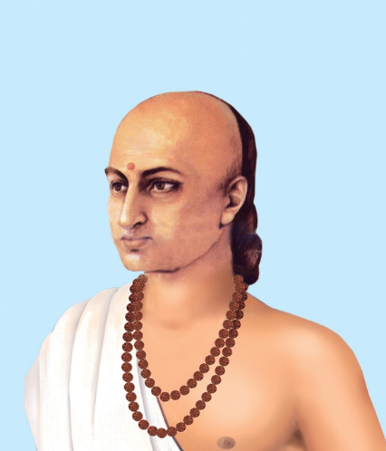

Brahmagupta’s Contributions in Mathematics
BrahmaguptaBrahmagupta was a great mathematician and astronomer. Brahamgupta considered himself to be an astrologer, maybe because his father Jisnugupta was an astrologer but today, he is mostly remembered for his significant works in the field of mathematics. He was born in 598 CE in Bhinmal, a city in Rajasthan. He spent a major part of his life in Rajasthan. Ujjain was the centre of Indian mathematical astronomy in ancient times and Brahamgupta was the director of this centre. While he was in Ujjain, he wrote many books on mathematics and astronomy. These include ‘Durkeamynarda’ (672), ‘Khandakhadyaka’ (665), ‘Brahmasphutasiddhanta’ (628) and ‘Cadamakela’ (624). The ‘Brahmasphutasiddhanta’ meaning the ‘Doctrine of Brahamagupta’ is one of his well-known works. The ‘Brahmasphutasiddhanta’ consists of 25 chapters. In the first 10 chapters, topics covered are, mean longitudes of the planets, true longitudes of the planets, the three problems of diurnal rotation, lunar eclipses, solar eclipses, risings and settings, the moon’s crescent, the moon’s shadow, conjunctions of the planets with each other, and conjunctions of the planets with the fixed stars. The rest of the 15 chapters are focused more on mathematical concepts. One of his fellow mathematicians gave him the title of ‘Ganita Chakra Chudamani’ which when translated meant, ‘The gem of the circle of mathematicians’. It is believed, that he died in Ujjain, in 668 CE. His contributions to mathematics are mentioned below.
1. Properties of Zero
2. Brahmagupta’s Method of Multiplication
3. Intermediate Equations
4. Sum of Series
5. Pythagorean triplets
6. Pell’s Equation
7. Brahmagupta’s Formula
8. Brahmagupta Theorem
9. Triangles
10. Approximation of π
11. Mensuration and Construction
12. Trigonometry
13. Interpolation formula
14. Algebra